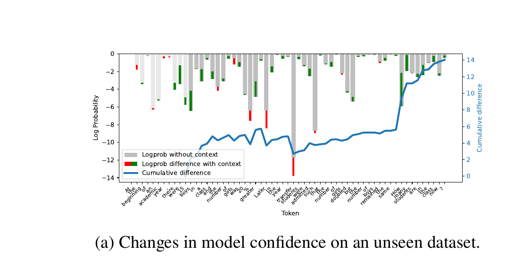
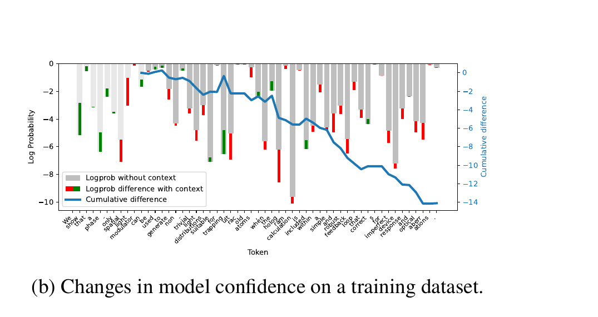
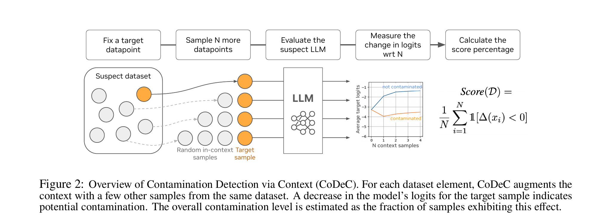
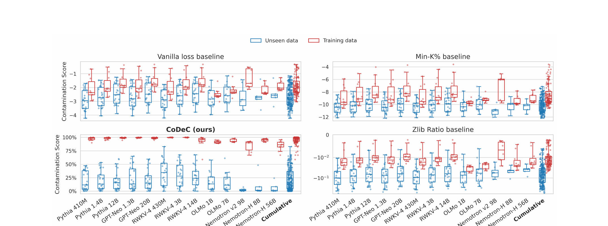
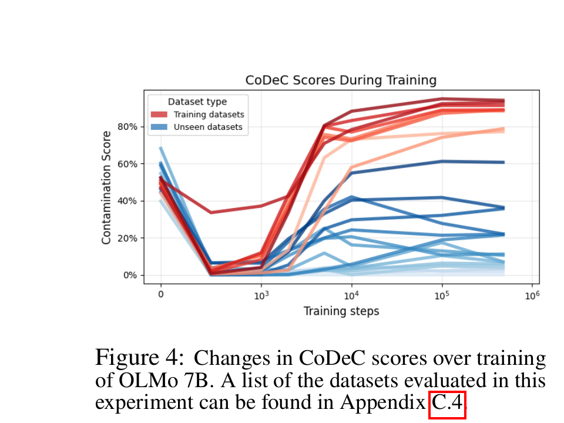
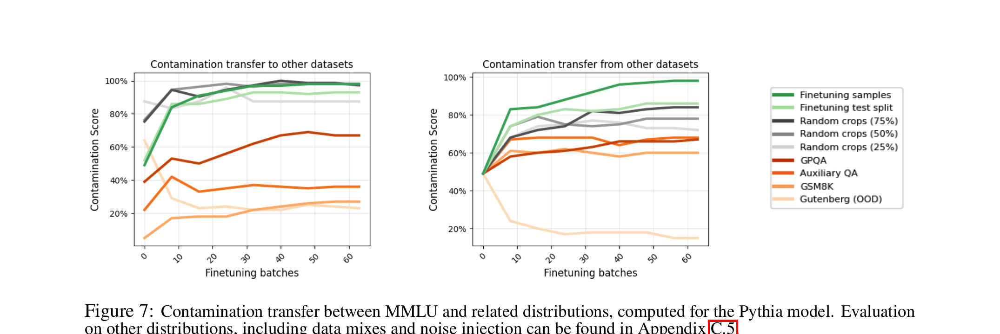

A simple, accurate method that reveals what your LLM has already memorized — by measuring how in-context examples change its confidence.
LLM benchmarks are losing their meaning.
When a model scores 95% on a benchmark, how much of that is genuine reasoning versus memorized answers? As LLMs train on ever-larger web corpora, popular benchmarks inevitably leak into training data. This data contamination silently inflates reported performance, making fair model comparison impossible.
Existing detection methods require access to training data, need extensive parameter tuning per model, or fail to produce reliable, interpretable results at scale. None of them offer a practical, out-of-the-box solution.
We need a method that works with any model, any dataset, automatically.
Models respond differently to in-context examples depending on whether they have already memorized the data.
When a model hasn't seen a dataset, in-context examples from the same distribution provide useful patterns — new stylistic cues, vocabulary, and structure. The model's confidence on target samples increases.

When a model has memorized a dataset, it has already internalized all its patterns. Adding more examples from the same dataset disrupts memorization, and the model's confidence decreases.

CoDeC measures this difference. The fraction of samples where confidence drops when context is added = the contamination score.
Four simple steps. Two forward passes. One clear answer.
Compute the model's average log-likelihood on target tokens without any context.
Prepend random samples from the same dataset and measure the model's predictions again.
Compute Δ(x) = logprobcontext(x) − logprobbaseline(x) for each sample.
The contamination score is the fraction of samples where Δ < 0 (confidence dropped).

Overview of the CoDeC pipeline. For each dataset element, CoDeC augments the context with samples from the same dataset. A decrease in the model's logits indicates potential contamination.
The effectiveness of CoDeC stems from several intuitive principles.
Models trained on a dataset internalize its unique style, vocabulary, and implicit assumptions. If these priors are already memorized, additional in-context examples add little useful information.
For contaminated data, adding memorized in-context examples can interfere with the model's memorized token sequences. The context triggers conflicting patterns, confusing the model and reducing its confidence.
Contaminated models resemble finetuned models near saturation — additional training yields minimal gains. CoDeC effectively measures the remaining learning capacity for the target dataset.
Memorized samples sit in narrow, sharp local minima. Even small perturbations (like adding context) destabilize predictions. Unseen data occupies flatter regions that benefit from additional context.
CoDeC produces clear, interpretable contamination scores across diverse models and datasets.

Contamination scores for training (red) and unseen (blue) datasets. Each point is a model–dataset pair. CoDeC achieves the best separation, enabling consistent classification across models and datasets.
Dataset-level AUC across all evaluated models. CoDeC cleanly separates seen from unseen data, while baselines (Vanilla Loss, Min-K%, Zlib Ratio) fail to provide reliable separation.

CoDeC scores during training of OLMo 7B. Contamination is detectable very early in training.
CoDeC detects contamination in the very early stages of training. After just 2% of training (10k out of 477k steps), contamination scores have nearly converged to their final values. Training dataset scores rise sharply while unseen dataset scores settle near their final values, remaining largely stable through the rest of training.
This makes CoDeC highly effective for identifying and preventing benchmark leaks during model development.
Qwen 2.5 scored 100% contamination on GSM8K's training set but only 27% on the test set — CoDeC detected this difference, confirming that the training set was deliberately included while the test set was excluded. This validates both CoDeC's sensitivity and the model developers' data curation practices.

Contamination transfer between MMLU and related distributions. CoDeC detects indirect contamination from related data, even when the exact benchmark was never included in training.
CoDeC captures not only direct memorization but also contamination arising from training on related or augmented data. Finetuning on MMLU makes the model highly contaminated even on unseen questions, and contamination scores remain high even when cropping evaluation data to just 25% of the original.
This cannot be detected by simple n-gram overlap checks.
CoDeC enables a range of practical use cases for improving LLM evaluation and development.
Identify when reported benchmark scores may be inflated by training data leakage, enabling more trustworthy performance comparisons.
Verify training data claims for open-weight models. CoDeC works even when training corpora are undisclosed, requiring only gray-box access.
Detect accidental benchmark inclusion during data curation. CoDeC identifies contamination after just 2% of training, enabling early intervention.
Among models with similar benchmark accuracy, those with lower CoDeC scores should generalize better. CoDeC separates genuine capability from memorization.
Catch indirect leakage from related, augmented, or synthetically generated data — contamination that n-gram overlap checks cannot detect.
We evaluated 40+ recent models across 20+ popular benchmarks. Explore the full results interactively.
@inproceedings{zawalski2026detecting,
title={Detecting Data Contamination in {LLMs} via In-Context Learning},
author={Zawalski, Micha{\l} and Boubdir, Meriem and Ba{\l}azy, Klaudia and Nushi, Besmira and Ribalta, Pablo},
booktitle={International Conference on Learning Representations (ICLR)},
year={2026},
url={https://openreview.net/forum?id=YlpaaYxx4t}
}